Explore
Cultural Heritage
 12th Century
12th Century
Angkor Wat
Angkor Wat is one of the most famous tourist attractions in Siem Reap, Cambodia. Built in the 12th century, it is known as the largest religious monument in the world. With its stunning Khmer architecture, beautiful carvings, and rich history, Angkor Wat is a must-visit destination for both local and international travelers.
Bayon Temple
Bayon Temple is one of the most remarkable temples in Angkor Thom, Siem Reap. It is famous for its many giant stone faces carved on the towers, creating a unique and unforgettable view. Built in the late 12th century, Bayon reflects the beauty of Khmer architecture and the rich history of the Angkor period. It is a must-visit destination for travelers who want to explore Cambodia’s cultural heritage.
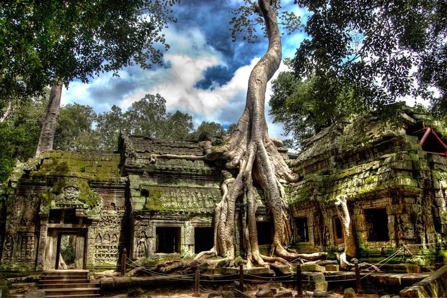
Nature & HistoryTa Prohm
Ta Prohm is one of the most popular temples in Siem Reap, well known for the giant tree roots growing over its ancient stone walls. Built in the 12th century, the temple offers a mysterious and unforgettable atmosphere that attracts visitors from around the world. Its unique combination of nature and history makes Ta Prohm a must-visit destination in the Angkor area.
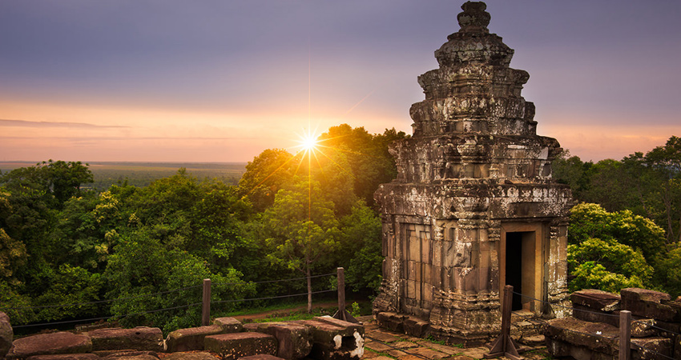
Sunset ViewsPhnom Bakheng
Phnom Bakheng is a famous hilltop temple in Siem Reap, known for its beautiful Khmer architecture and stunning sunset views. It is one of the best places for visitors to enjoy the sunset while exploring the rich history of the Angkor area. Its peaceful atmosphere and scenic landscape make it a popular destination for tourists.
Nature
Natural Attractions
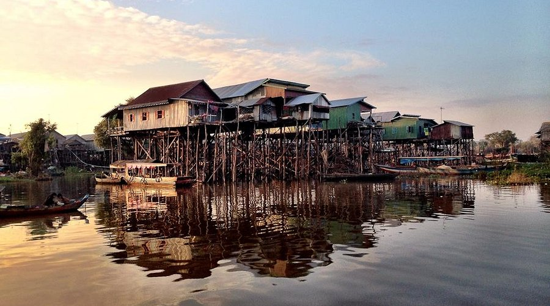
Floating VillageTonle Sap / Kampong Phluk
Tonle Sap / Kampong Phluk is a popular attraction near Siem Reap, offering visitors a chance to explore local life on and around Cambodia’s famous lake. Kampong Phluk is known for its tall stilt houses, boat trips, and beautiful flooded forest, creating a unique and peaceful experience for travelers. It is a great place to enjoy nature, see traditional village life, and discover a different side of Cambodia beyond the temples.
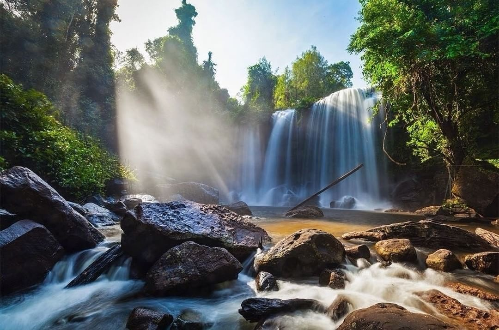
Sacred MountainPhnom Kulen
Phnom Kulen is a famous natural and cultural destination in Siem Reap, known for its beautiful waterfalls, mountain scenery, and sacred historical sites. It is a perfect place for visitors who want to relax in nature while also exploring Cambodia’s rich heritage. With its fresh atmosphere and peaceful surroundings, Phnom Kulen is a great destination for adventure, sightseeing, and enjoying a refreshing escape from the city.
Museums & Nightlife
Museums & Entertainment
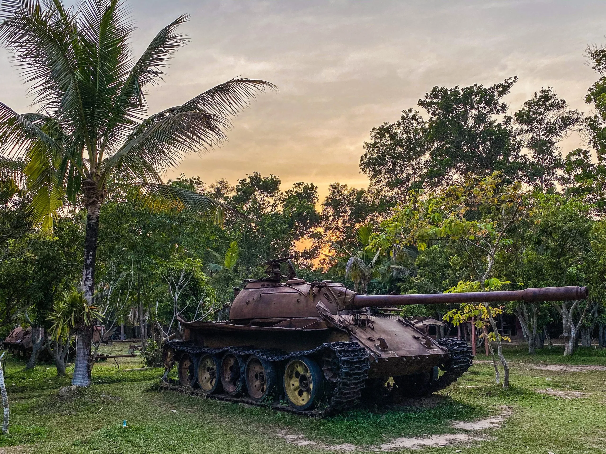
MuseumWar Museum Cambodia
War Museum Cambodia is a unique museum in Siem Reap that gives visitors insight into Cambodia’s recent history and past conflicts. The museum displays military vehicles, weapons, and war-related artifacts, helping tourists learn more about the country’s struggle and resilience. It is a meaningful place for visitors who want to understand an important part of Cambodia’s history beyond its ancient temples.
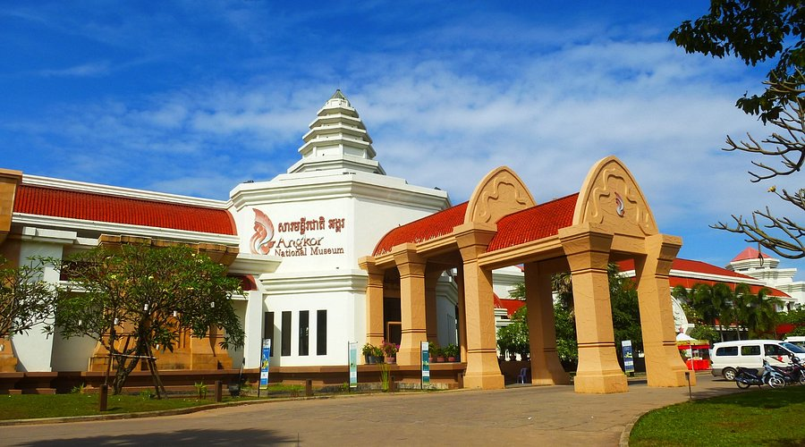
MuseumAngkor National Museum
Angkor National Museum is a must-visit destination in Siem Reap for travelers who want to learn more about Cambodia’s rich history and culture. The museum showcases a wide collection of Khmer artifacts, ancient sculptures, and exhibits related to the Angkor period. It offers visitors an informative and engaging experience that helps them better understand the heritage and beauty of the Khmer Empire.
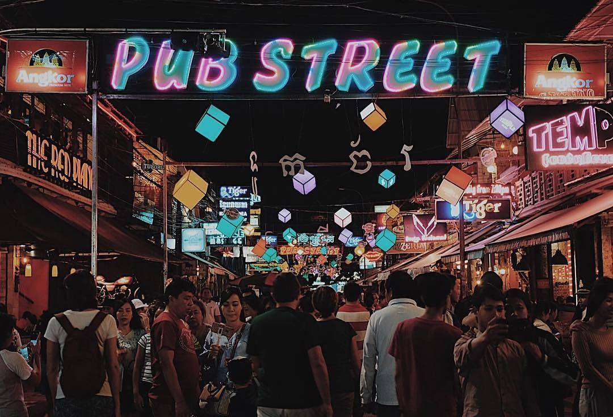
Night LifePub Street
Pub Street is one of the most lively and popular places in Siem Reap, especially known for its vibrant nightlife, restaurants, cafes, and local shops. It is a great place for visitors to enjoy delicious food, shopping, entertainment, and the exciting atmosphere of the city. Both local and international tourists often visit Pub Street to relax and experience the modern side of Siem Reap.
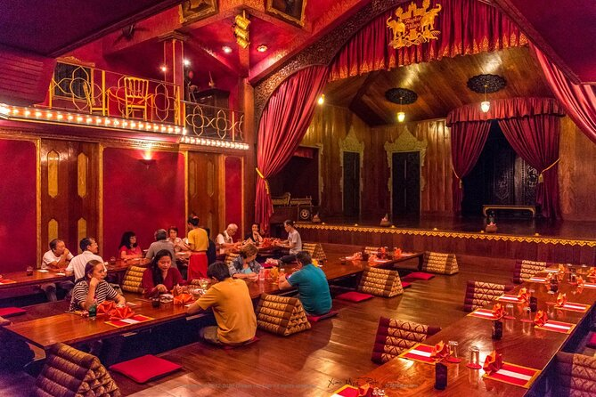
Performance & RestaurantApsara Theatre
Apsara Theatre is a cultural attraction in Siem Reap where visitors can enjoy traditional Khmer dance performances in a beautiful historic setting. Established in 1997, it is known as one of the oldest theatres in the city and plays an important role in preserving Cambodia’s rich performing arts. Guests can experience classical dances, folk dances, and performances from the Reamker, along with an authentic Khmer dinner, making it a memorable cultural experience for tourists.
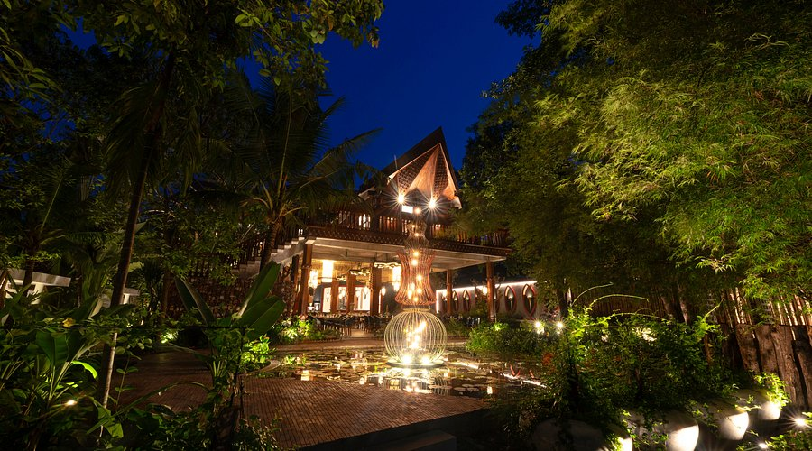
RestaurantMealea Watbo
Mealea Watbo is a popular restaurant in Siem Reap that offers a mix of traditional Khmer dishes and Western cuisine. Located in the heart of the city, it provides a cozy and welcoming atmosphere for visitors to enjoy local flavors made with fresh ingredients. It is a great place for tourists who want to experience Cambodian food in a comfortable dining setting.
Cambodian Taste
Traditional Food
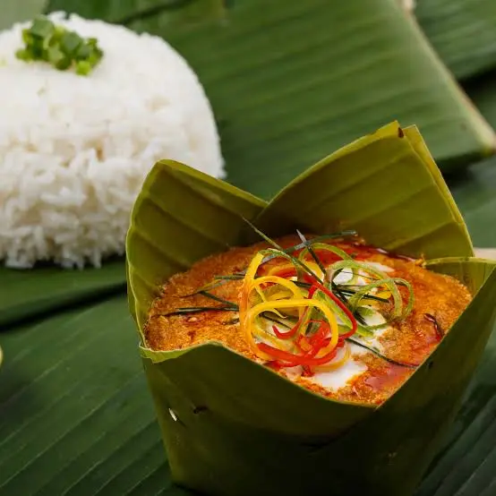
Fish Amok
Fish Amok is one of Cambodia’s most famous traditional dishes and a must-try food for visitors in Siem Reap. It is made with fish cooked in a rich and creamy curry sauce, mixed with coconut milk, kroeung spices, and herbs, then often steamed in banana leaves. With its smooth texture and unique Khmer flavor, Fish Amok offers tourists a delicious taste of Cambodia’s culinary heritage.

Beef Lok Lak
Beef Lok Lak is one of Cambodia’s most famous traditional dishes. It is made with stir-fried marinated beef, usually served with rice, fresh lettuce, tomatoes, cucumbers, and onions, and often topped with a fried egg. What makes it special is the lime and black pepper dipping sauce, which gives it a rich, savory, slightly tangy flavor.

Nom Banh Chok
Nom Banh Chok is a beloved traditional Cambodian noodle dish, often eaten for breakfast. It consists of fresh rice noodles topped with a light green fish-based curry gravy and served with fresh vegetables such as banana blossom, cucumber, bean sprouts, and herbs. It is known for its fresh, light, and fragrant taste.
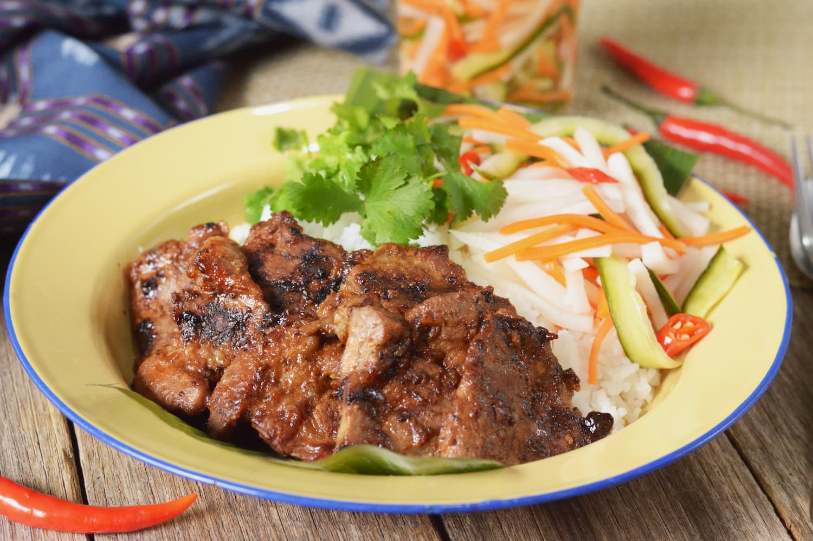
Bai Sach Chrouk
Bai Sach Chrouk is a classic Cambodian breakfast dish made with grilled pork served over rice. The pork is usually marinated to give it a slightly sweet and savory flavor, and it is often served with pickled vegetables, fresh cucumber, and a bowl of light soup. Simple but delicious, it is one of the most common morning meals in Cambodia.
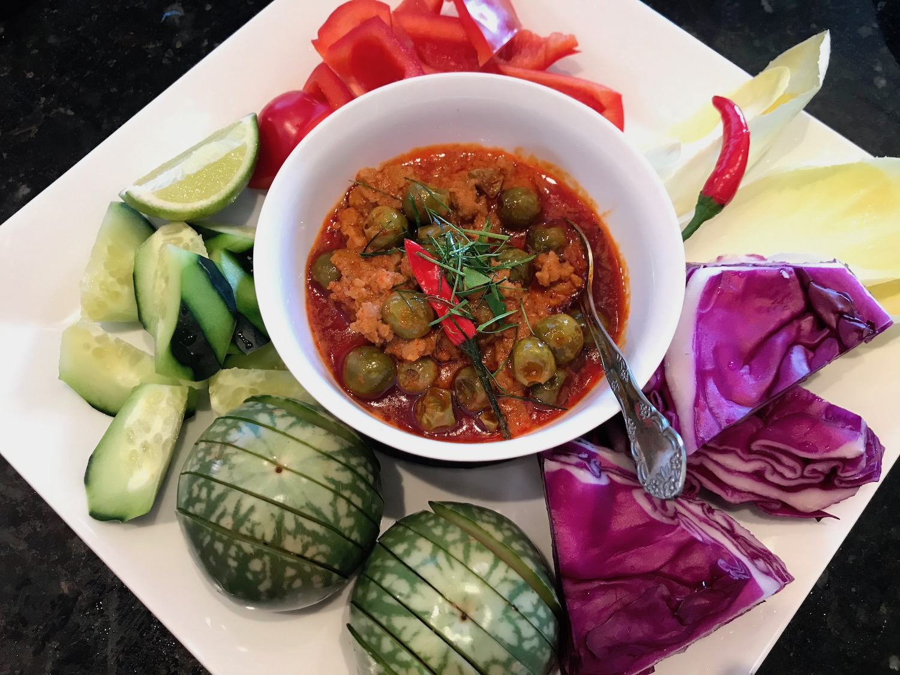
Prahok Ktiss
Prahok Ktiss is a rich and traditional Cambodian dish made from prahok (fermented fish paste) cooked with minced pork, coconut milk, and spices. It is usually served as a dip with fresh vegetables such as cucumber, eggplant, long beans, and cabbage. The flavor is savory, creamy, and strongly Cambodian, making it a unique dish for visitors to try.
Stay
Accommodation
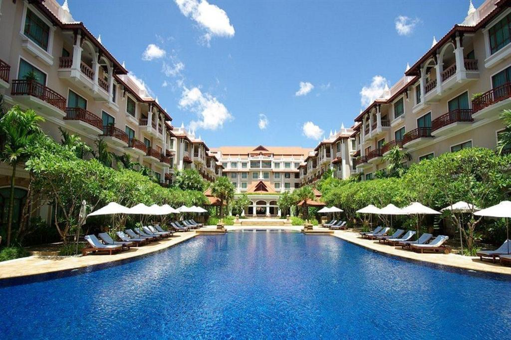
5 StarSokha Angkor Resort
Sokha Angkor Resort is a five-star luxury hotel in the heart of Siem Reap, offering elegant Khmer-inspired design, spacious rooms and suites, dining outlets, a spa, and a saltwater swimming pool. Its central location places it within walking distance of Pub Street, the Old Market, and the Night Market, while Angkor Wat is about an 18-minute drive away, making it a convenient choice for both city exploration and temple visits.
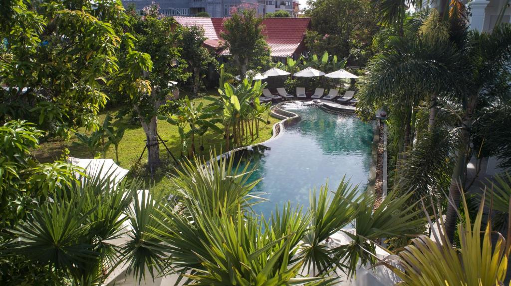
Family FriendlyThe Jungle
The Jungle offers comfortable family-friendly accommodation in Siem Reap, with private bathrooms, air-conditioning, and modern amenities. Guests can enjoy garden or pool views from their balconies or terraces, while relaxing with wellness facilities such as a spa, outdoor swimming pool, fitness area, sauna, kids’ pool, and yoga classes. The on-site restaurant serves local, Asian, and international cuisine in a welcoming atmosphere. Conveniently located near Angkor National Museum and only about 7 km from Angkor Wat, the hotel is a great choice for travelers who want both relaxation and easy access to Siem Reap’s top attractions.
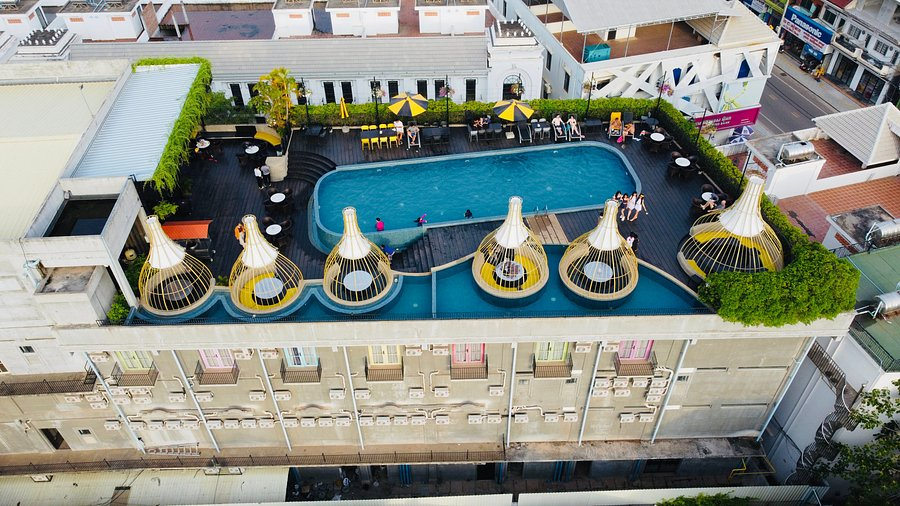
3 StarThe Twizt
The Twizt - Lifestyle Hostel & Hotel is a stylish 3-star stay in the heart of Siem Reap, offering comfortable accommodation with rooftop swimming pools, sun terraces, lush gardens, and free WiFi in public areas. Guests can enjoy a modern dining experience with American and Asian cuisine, along with leisure spaces such as a games room, outdoor fireplace, and live music. Its city-centre location makes it especially convenient, just an 8-minute walk from King’s Road Angkor, around 6 km from Angkor Wat, and close to attractions like Angkor National Museum and Wat Thmei, making it a great base for exploring Siem Reap.
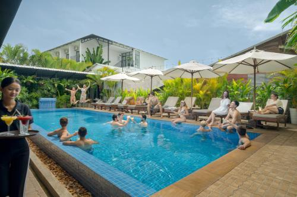
BudgetOnederz Hostel
Onederz Hostel Siem Reap is a modern and budget-friendly hostel located just 300 metres from Pub Street in the heart of Siem Reap. Offering both private rooms and dormitories with air conditioning, it is a great choice for travelers seeking comfort and convenience. Guests can enjoy free WiFi, on-site dining, and two swimming pools, including a rooftop pool with beautiful sunset views. Its location is especially convenient, with King’s Road Angkor nearby and Angkor Wat only 6 km away, making it an ideal base for exploring both the city center and famous temples.
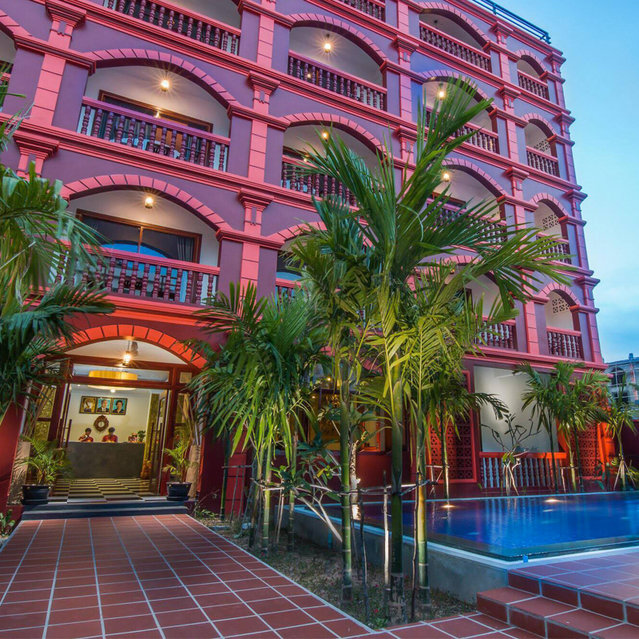
Khmer StyleBou Savy Guest House
Bou Savy Guest House is a comfortable and budget-friendly stay in Siem Reap, offering a peaceful Khmer-style atmosphere with convenient access to the city’s main attractions. Located near Royal Residence and Angkor National Museum, it is also within easy reach of Pub Street and around 8 km from Angkor Wat, making it a practical choice for travelers who want both comfort and a good location.
 Ecotourism
Ecotourism
Kampong Phluk Homestays
Kampong Phluk Homestays offer a community-based stay in the floating and flooded village area southeast of Siem Reap, giving visitors a chance to experience local family life, traditional meals, and the natural beauty of the flooded forest. The homestay experience is designed around village life and ecotourism, with activities such as paddling through the village, visiting stilt houses, hiking or boating in the flooded forest, and enjoying the peaceful countryside atmosphere. It is located about 19 km southeast of Siem Reap, making it a great option for travelers who want a more local and nature-focused experience beyond the city.
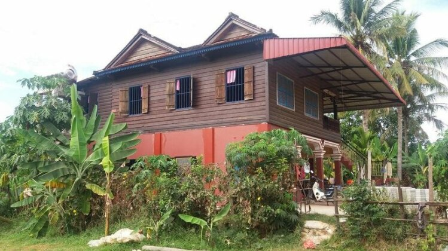
CountrysideLom Lam Eco Village Homestay
Lom Lam Eco Village Homestay offers an authentic countryside stay outside central Siem Reap, giving visitors a chance to experience local village life in a peaceful and non-touristy setting. Located in the Roluos / Prasat Bakong area, about 17 km from Siem Reap town, it is a great choice for travelers looking for a more traditional Cambodian homestay experience. Its location is convenient for visiting the Roluos temples and for routes toward the Tonlé Sap floating village area, while still being reachable from the city.